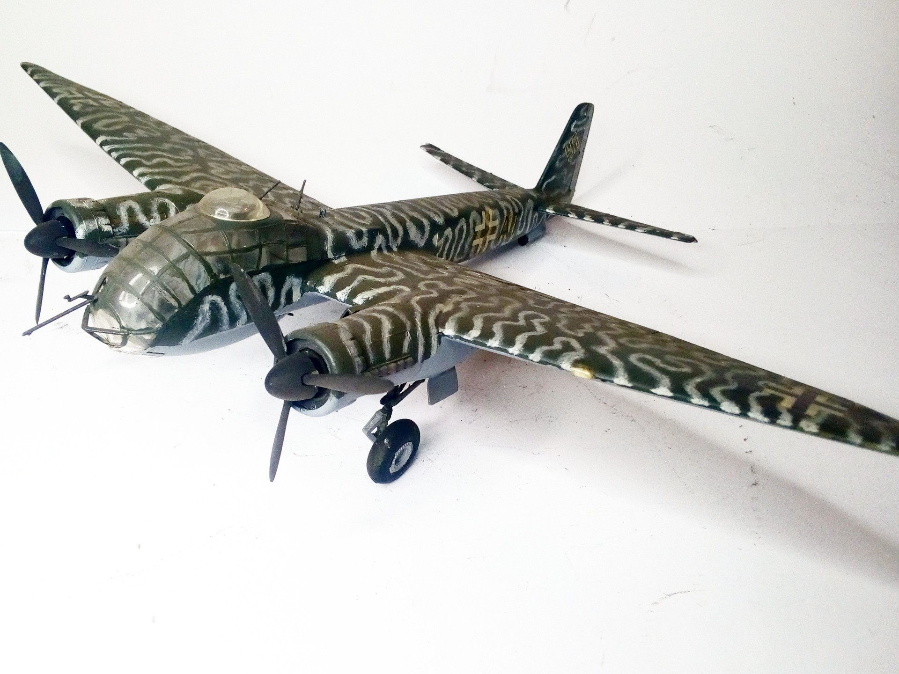
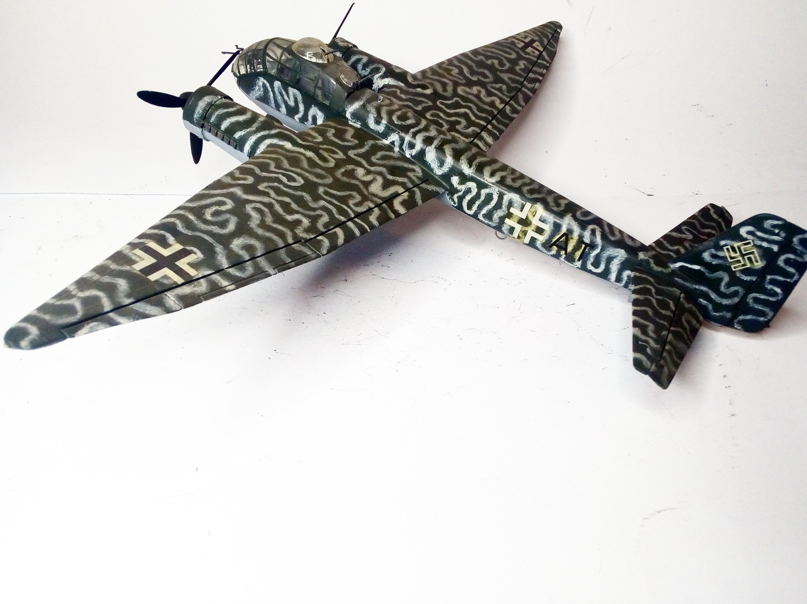

Aerei · scale model archive
Junkers Ju188 A1
Junkers Ju188 A1 — Kit: Italeri, Scale: 1/72. 1./KampfGeschwader 66 F5+AT #1/72 #Italeri #Ju188

Photo gallery

English description
1./KampfGeschwader 66 F5+AT
#1/72 #Italeri #Ju188
Descrizione italiana
1./KampfGeschwader 66 F5+AT. #1/72 #Italeri #Ju188